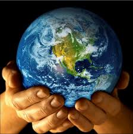
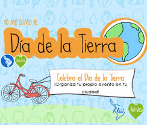
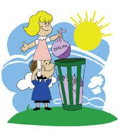
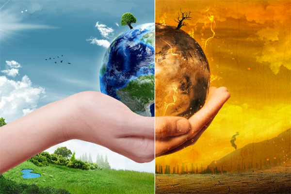
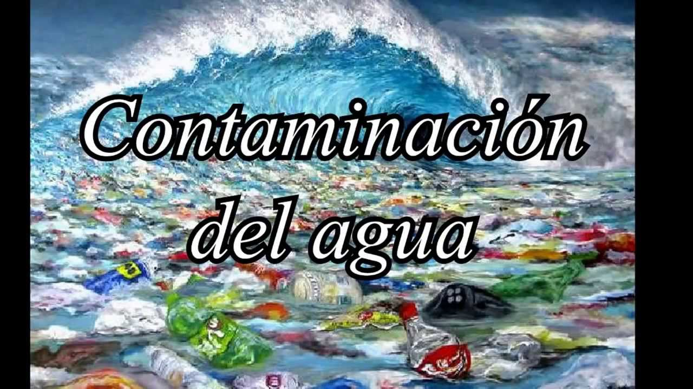
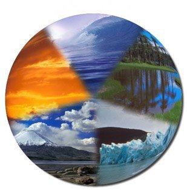
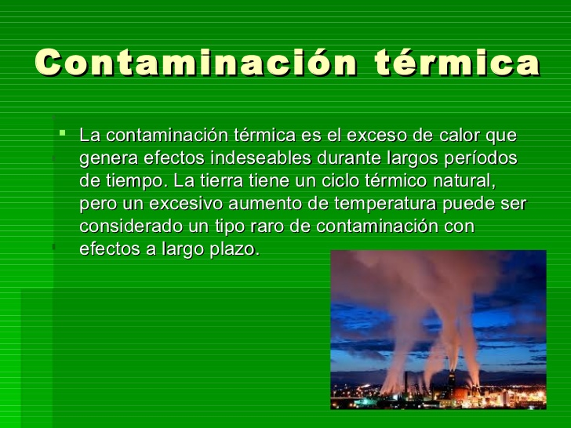
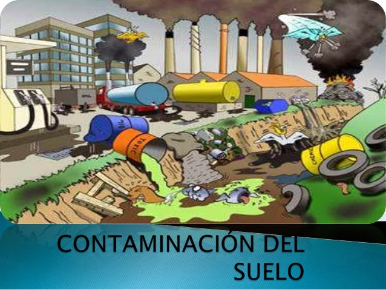
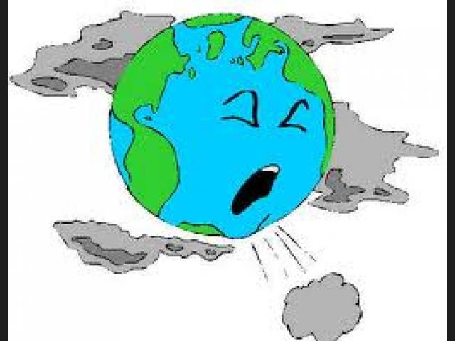

DIA DE LA TIERRA

Su promotor, el senador estadounidense Gaylord Nelson, instauró este día para crear una conciencia común a los problemas de la superpoblación, la producción de contaminación, la conservación de la biodiversidad y otras preocupaciones ambientales para proteger la Tierra. Es un día para rendir homenaje a nuestro planeta y reconocer a la Tierra como nuestro hogar y nuestra madre, así como lo han expresado distintas culturas a lo largo de la historia, demostrando la interdependencia entre sus ecosistemas y los seres vivos que la habitamos.
Este año, el Día de la Madre Tierra coincide con la ceremonia de firma del Acuerdo de París sobre el cambio climático, que tendrá lugar en la sede de las Naciones Unidas en Nueva York. El Acuerdo fue aprobado por los 196 Estados partes de la Convención Marco sobre el Cambio Climático en París el 12 de diciembre de 2015. En el acuerdo, todos los países se comprometieron a trabajar para limitar el aumento de la temperatura global por debajo de los 2 grados centígrados, y dados los graves riesgos, a esforzarse por lograr que sea menos de 1,5 grados centígrados. La ceremonia se lleva a cabo en el primer día que el Acuerdo estará abierto para la firma, marcando el primer paso para asegurar que el Acuerdo entre en vigor jurídico tan pronto como sea posible La Asamblea General, Reconociendo que Madre Tierra es una expresión común utilizada para referirse al planeta Tierra en diversos países y regiones, lo que demuestra la interdependencia existente entre los seres humanos, las demás especies vivas y el planeta que todos habitamos y Observando que cada año se celebra el Día de la Tierra en numerosos países, decidió designar el 22 de abril como Día Internacional de la Madre Tierra en 2009, en virtud de la resolución
El Día de la Tierra comenzó a celebrarse en los Estados Unidos de América en 1970 y ahora se dirige hacia su 50 aniversario. El Día está organizado por la Earth Day Network Disponible en inglés, cuaya misión consiste en ampliar y diversificar el movimiento ambiental en todo el mundo y movilizarlo eficazmente para construir un medio ambiente saludable y sostenible, hacer frente al cambio climático, y proteger la Tierra para las generaciones futuras. El tema de este año tiene el objetivo de plantar 7,8 millones de árboles en los próximos cinco años.
El 22 de abril de cada año se celebra el nacimiento del movimiento ambientalista moderno, el cual se inició en 1970 cuando 20 millones de norteamericanos tomaron las calles, los parques y los auditorios para manifestarse por un ambiente saludable y sustentable
El Día de la Tierra de 1970 logró una coincidencia política que parecía imposible. Ese día condujo a la creación de la Agencia de Protección al Medio Ambiente de Estados Unidos y a la aprobación de leyes relacionadas con el aire limpio, el agua limpia y la conservación de especies en peligro de extinci&aocute;n. A partir de entonces, cada año en esta fecha, el mundo entero reflexiona.

La celebración del día de la Tierra es el 22 de abril y comenzó en 1970. Hoy es un evento a nivel mundial reconocido en más de 192 países. Dedicar un día especial para contribuir con la Tierra es una manera de demostrarle lo mucho que nos interesa el futuro de nuestro planeta. Sea lo que sea que más te guste, hay una manera de participar en este día especial. Podrías plantar un árbol, preparar un platillo con vegetales de cultivo local, educar a un miembro de la familia, limpiar la basura del vecindario, instalar un alimentador para aves o ahorrar energía, en fin, las posibilidades son infinitas. Recuerda que no tienes necesariamente que esperar a que venga el día de la Tierra para mostrar tu amor por el planeta al que consideramos nuestro hogar.

Aprende más sobre el medio ambiente. El día de la Tierra es un buen momento para comprometerse a aprender más sobre el medio ambiente y qué se puede hacer para protegerlo. Lee artículos para estar al día con los sucesos actuales que afectan el medio ambiente, tales como la contaminación, la falta de agua y el cambio climático. Si no, aprende sobre alguna región que nunca hayas considerado como el Ártico, los desiertos o las selvas tropicales. ¿No estás seguro por dónde empezar?
Únete a un grupo ambientalista. Piensa qué problemas te atañen más y si todavía no lo has hecho, únete a un grupo local dedicado a actividades para ayudar a proteger el medio ambiente en tu localidad. El día de la Tierra es un día excelente para empezar a participar. En casi todas las comunidades, encontrarás grupos locales haciendo lo siguiente:[6]
Organizan días de limpieza de los cuerpos locales de agua y sus orillas.
Luchan contra la contaminación del aire y del agua.
Plantan árboles e instalan jardines comunitarios.
Protegen hábitats en riesgo de desarrollo urbano
¿No encuentras un grupo? Entonces crea el tuyo.
Proteger el planeta para las generaciones futuras no significa renunciar a nuestras vidas o abandonar las actividades diarias. Al adoptar hábitos sencillos y de sentido común, cada uno de nosotros puede ahorrar energía, disminuir la contaminación que afecta la temperatura de la Tierra, y conservar nuestros recursos naturales limitados.Desde 1970, personas en todo el mundo han unido esfuerzos en el Día de la Tierra para cuidar el medio ambiente y construir un mañana más saludable para ellos y sus familias. Nuestra participación es muy importante y debemos tomar medidas. Iluminar nuestras casas y conducir nuestros autos emite gases al aire que hacen que la Tierra se convierta en un gran invernadero y aumenten las temperaturas.Este calentamiento provoca cambios profundos y perturbadores en el planeta. Si no tomamos acciones para abatirlo, nuestros hijos y las siguientes generaciones tendrán que vivir en un lugar muy diferente al que conocemos.El reto es muy grande y puede parecer abrumador. Pero cuando muchas personas hacen pequeños esfuerzos, estos se suman para generar un cambio positivo a gran escala. Lo principal es empezar por elegir productos y servicios sustentables.
Desconectar los aparatos electrónicos cuando no se estén usando. Por ejemplo: Computadoras, microondas, aires acondicionados, fotocopiadoras, impresoras, etc… Apagar las luces cuando se esté ausente de la oficina. Utilizar focos ahorradores de luz; éstos son más caros que los normales; pero duran hasta 8 veces más y consumen la quinta parte de la energía para dar la misma cantidad de luz que un bombillo normal. Procurar utilizar pilas recargables o enchufar los aparatos a la red eléctrica. Si es inevitable el uso de pilas desechables, éstas no deben estar revueltas entre la basura. En lugar de ello, sepárelas y colóquelas en un recipiente aparte; ya que contienen sustancias químicas que son tóxicas. Usar racionalmente el agua. Utilizar el agua caliente sólo de ser necesario. Instalar un filtro o garrafón de agua para ahorrar las botellas. No dejar las llaves abiertas para evitar el despilfarro, arreglar las goteras, reparar inmediatamente cualquier fuga y de ser posible reinvertir el agua para otras actividades. Manejar menos y utilizar el transporte público. Otra buena opción, es caminar o usar otros medios de transporte que no contaminen. En caso de que sea imprescindible salir en el automóvil para ir al trabajo, compártelo con otros compañeros o vecinos. Preguntarse si realmente se necesita un producto, antes de comprarlo.

Este artículo versa sobre el actual calentamiento del sistema climático de la Tierra. «Cambio climático» también puede referirse a las tendencias climáticas de cualquier momento de la historia geológica.Media global del cambio de temperatura superficial en 1880-2015, respecto a la media de 1951-1980. La línea negra es la media anual y la roja la media móvil de cinco años. Fuente: NASA GISS.Mapamundi mostrando las tendencias en la temperatura superficial (°C por década) entre 1950 y 2014.Emisiones de dióxido de carbono (CO2) provenientes de combustibles fósiles comparadas con los cinco de los escenarios de emisión «SRES» del IPCC. Calentamiento global y cambio climático se refieren al aumento observado en los últimos siglos de la temperatura media del sistema climático de la Tierra y sus efectos.Múltiples líneas de pruebas científicas demuestran que el sistema climático se está calentando. Aunque a menudo la prensa popular comunica el incremento de la temperatura atmosférica superficial como medición del calentamiento global, la mayor parte de la energía adicional almacenada en el sistema climático desde 1970 se ha usado en calentar los océanos. El resto ha fundido el hielo y calentado los continentes y la atmósfera.nota 1 Muchos de los cambios observados desde la década de 1950 no tienen precedentes en décadas, aun milenios. En su quinto informe (AR5) el Grupo Intergubernamental de Expertos sobre el Cambio Climático (IPCC) señala que en 2014 los científicos estaban más del 95 % seguros de que la mayor parte del calentamiento global es causada por las crecientes concentraciones de gases de efecto invernadero (GEI) y otras actividades humanas (antropogénicas).Las proyecciones de modelos climáticos resumidos en el AR5 indicaron que durante el presente siglo la temperatura superficial global subirá probablemente 0,3 a 1,7 °C para su escenario de emisiones más bajas usando mitigación estricta y 2,6 a 4,8 °C para las mayores.Estas conclusiones han sido respaldadas por las academias nacionales de ciencia de los principales países industrializados nota 2 y no son disputadas por ninguna organización científica de prestigio nacional o internacional.El cambio climático futuro y los impactos asociados serán distintos en una región a otra alrededor del globo.
Contaminación del Agua Como su nombre lo sugiere, “Contaminación del agua” es el tipo de contaminación que supone la contaminación distintos cuerpos de agua. Varias criaturas acuáticas dependen de estos cuerpos de agua y sus características naturales nutritivos para apoyar su vida. Contaminación del Agua ¿Qué causa la contaminación del agua? Los residuos industriales se vierten en estos cuerpos de agua. Esto provoca un desequilibrio químico en el agua que conduce a la muerte de los seres acuáticos. Insecticidas, pesticidas y productos químicos de maduración que se utilizan en las plantas que se usan en el sistema de aguas subterráneas o arroyos cercanos. Lavar la ropa cerca de lagos y ríos detergentes causa una enfermedad llamada “eutrofización”, que bloquea la luz del sol entre en el interior y reduce los valores de oxígeno en el agua, causando un ambiente inhabitable. Definición Contaminación Acustica Molesto / desagradable Fuerte Distracción / Intrusa El ruido es en realidad una palabra latina que le da el significado? Mareo?. Más comúnmente, se puede afirmar que la sensación de molestia, desagrado o molestia.No es muy fácil de definir la definición de la contaminación acústica. Esta contaminación no es no sólo perturbar el medio ambiente sino que también produce daño a nuestra humanidad. Causas de contaminación acústica y los efectos de la contaminación acústica En nuestro día a día la vida de la contaminación acústica está aumentando rápidamente y se vuelve a creeer como una de las amenazas graves en algunas zonas..

Contaminación Lumínica La luz artificial se está convirtiendo en un peligro para nuestra planeta. Esta no sólo afecta a la belleza natural, sino a seres humanos, los animales, las aves y la vegetación. Por lo tanto, el ciclo de vida de los seres vivos también está siendo afectada por la contaminación lumínica.Mucha gente no sabe acerca de la contaminación lumínica, sino que se ha extendido en casi todos los países del planeta tierra. Todo el mundo se enfrenta ahora al problema de la contaminación lumínica y mucha gente y los gobiernos son conscientes de sus efectos desastrosos. ¿Qué es la contaminación lumínica? De acuerdo con el Servicio de Parques Nacionales, a la luz de los Estados Unidos por encima de lo que se requiere es llamada contaminación lumínica. La Asociación Internacional Cielo Oscuro define la contaminación lumínica a los efectos nocivos de la luz artificial en la atmósfera de la Tierra y el medio ambiente.

Contaminación Térmica Es un hecho bien conocido que la quema de combustibles fósiles en centrales eléctricas, hornos industriales y motores de vehículos causa la contaminación del aire. Sin embargo, un menor impacto conocido asociado con estos procesos de generación de energía es la contaminación térmica. La contaminación térmica se refiere a la adición de grandes cantidades de calor residual para el medio ambiente, las causas de la contaminación térmica son casi las mismas que las que causa la contaminación del aire. Las causas de la contaminación térmica De vehículos de motor a la mayoría de la electricidad producida en las centrales eléctricas, la forma primaria de energía involucrada es el calor.

La contaminación radiactiva Los desechos radiactivos son residuos que contienen material radiactivo. Los desechos radiactivos son generalmente subproductos de la generación de energía nuclear y otras aplicaciones de la fisión nuclear o tecnología nuclear, como la investigación y la medicina. Los residuos radiactivos son peligrosos para la salud humana y el medio ambiente, y está regulado por las agencias gubernamentales con el fin de proteger la salud humana y el medio ambiente.La contaminación radioactiva disminuye con el tiempo, por lo que los residuos se aísla típicamente y se almacenan durante un período de tiempo hasta que ya no representa un peligro. El período de tiempo de residuos se deben almacenar depende del tipo de residuos.
.
¿Qué es la contaminación del suelo?
La contaminación del suelo se refiere a la contaminación del suelo por medio de exceso de fertilizantes, productos químicos, insecticidas, herbicidas, pesticidas, etc provocan contaminación del suelo en la disminución de la calidad del suelo y es causada por la erosión del suelo, el exceso o déficit de humedad, disminución de la nutrientes para las plantas o microorganismos del suelo, y la fluctuación de la temperatura alta.La contaminación del suelo, en cierto modo, también conduce a la contaminación del aire y la contaminación del agua. La contaminación del suelo conduce naturalmente a la contaminación del aire por la liberación de estos compuestos en la atmósfera y que puedan explotar. .

¿Que es la Contaminación del Aire?
El monóxido de carbono y óxido de azufre se consideran contaminantes primarios. Estos contaminantes sufren cambios químicos y causan efectos secundarios tales como smog. La contaminación del aire se define por la existencia y la integración de los compuestos tóxicos en el ambiente en concentraciones lo suficientemente altas como para causar daño a los seres humanos, los animales y el medio ambiente de la Tierra. Causas La quema de combustibles fósiles emite monóxido de carbono y óxido de azufre. Automóviles, autobuses, aviones y cualquier forma de gas como combustible de transporte emiten gases de monóxido de carbono a través de sistemas de escape. El dióxido de azufre se crea a través de la combustión de carbón, y está asociado con los residuos industriales. Los procesos de fabricación utilizan carbón como combustible, liberando dióxido de azufre en el aire a través de los sistemas de escape de fábrica.

En mi comunidad no hay muchos problemas porque no hay quema de llantas y la basura la mayoria de las personas la juntamos,si hay basura pero es una cantidad minima porque hay personas que trabajan en eso de barrer y mantener limpias las calles para que no se vea mal,asi tambien todos los desechos de los animales lo juntan y mantienen mas o menos limpio para que tambien no haya una enfermedad para los animales.
Aunque en el camino para ir a mi comunidad tambien no hay mucha basura pero hay gente que cuando va en la carretera en sus coches tiran basura a los terrenos.